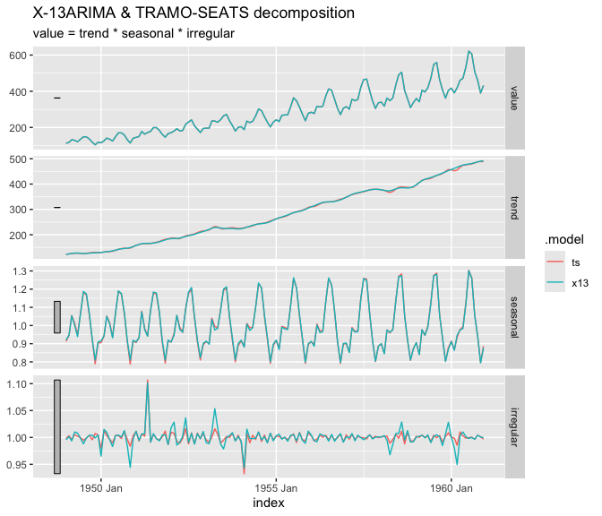

fable.rjd3 brings the seasonal adjustment algorithms of JDemetra+ v3 to the fable framework. It lets you seasonally adjust tsibble series with the standard model() / components() workflow, on one or many series at once, and gives access to everything JDemetra+ computes.
-
Four models:
X13()(X-13ARIMA),TRAMOSEATS()(TRAMO-SEATS), and the pre-adjustment modelsREGARIMA()andTRAMO(). -
Full control of the specification, either with the specification objects of the
rjd3*packages or with specials in the model formula, including regressors taken from the columns of thetsibble. -
Standard verbs:
components(),forecast(),glance(),tidy(),report(),fitted(),residuals(),augment(),outliers(),refit(),stream(), andbackcast(). -
Any JDemetra+ indicator with
jd3_indicator(), from the Java result kept in the model. -
JDemetra+ workspaces:
import_jws()andexport_jws().
Installation
fable.rjd3 is built on the JDemetra+ v3 R packages (rjd3toolkit, rjd3x13, rjd3tramoseats and rjd3workspace), which requires Java 21 or higher.
To install the developpment version:
- From r-universe:
install.packages("fable.rjd3", repos = c("https://aqlt.r-universe.dev", "https://cloud.r-project.org"))- From GitHub:
# install.packages("pak")
pak::pak("AQLT/fable.rjd3")Example
The series must be a regular, univariate tsibble with a yearmonth or yearquarter index. Monthly, bimonthly, quarterly, four-monthly and semi-annual series are supported: the frequency is deduced from the interval between observations (for example, a yearmonth index with a step of 6 months is a semi-annual series).
library(fable.rjd3)
air <- as_tsibble(AirPassengers)
mb <- model(
air,
x13 = X13(value),
ts = TRAMOSEATS(value)
)
mb
#> # A mable: 1 x 2
#> x13 ts
#> <model> <model>
#> 1 <X-13ARIMA, ARIMA(0,1,1)(0,1,1)> <TRAMO-SEATS, ARIMA(0,1,0)(0,1,1)>components() returns the decomposition as a dable (trend, seasonal, irregular and seasonally adjusted series):
components(mb)
#> # A dable: 288 x 7 [1M]
#> # Key: .model [2]
#> # : value = trend * seasonal * irregular
#> .model index value trend seasonal irregular season_adjust
#> <chr> <mth> <dbl> <dbl> <dbl> <dbl> <dbl>
#> 1 x13 1949 Jan 112 122. 0.920 0.996 122.
#> 2 x13 1949 Feb 118 124. 0.948 1.00 125.
#> 3 x13 1949 Mar 132 126. 1.05 0.994 125.
#> 4 x13 1949 Apr 129 128. 1.00 1.01 129.
#> 5 x13 1949 May 121 128. 0.939 1.01 129.
#> 6 x13 1949 Jun 135 127. 1.07 0.998 127.
#> 7 x13 1949 Jul 148 126. 1.19 0.988 125.
#> 8 x13 1949 Aug 148 126. 1.17 0.999 126.
#> 9 x13 1949 Sep 136 127. 1.07 1.00 128.
#> 10 x13 1949 Oct 119 128. 0.925 1.00 129.
#> # ℹ 278 more rows
library(ggtime)
ggplot2::autoplot(components(mb))
Diagnostics
glance(mb)
#> # A tibble: 2 × 22
#> .model aicc nobs nparams nout lb_stat lb_pvalue normality_stat
#> <chr> <dbl> <dbl> <dbl> <dbl> <dbl> <dbl> <dbl>
#> 1 x13 947. 144 6 1 23.9 0.354 0.763
#> 2 ts 936. 144 7 2 30.8 0.128 0.834
#> # ℹ 14 more variables: normality_pvalue <dbl>, ftest_sa_stat <dbl>,
#> # ftest_sa_pvalue <dbl>, qs_test_sa_stat <dbl>, qs_test_sa_pvalue <dbl>,
#> # combined_test_sa <chr>, combined_test_sa_lastyears <chr>,
#> # td_on_sa_stat <dbl>, td_on_sa_pvalue <dbl>, Q <dbl>, Q_M2 <dbl>,
#> # seas_var <dbl>, irr_var <dbl>, seas_irr_corr <dbl>
tidy(mb_log)
#> # A tibble: 2 × 6
#> .model term estimate std.error statistic p.value
#> <chr> <chr> <dbl> <dbl> <dbl> <dbl>
#> 1 x13 theta(1) -0.402 0.0896 -4.48 1.62e- 5
#> 2 x13 btheta(1) -0.557 0.0731 -7.62 5.05e-12
report(mb["x13"])
#> Series: value
#> Model: X-13ARIMA, ARIMA(0,1,1)(0,1,1)
#> Mode: Multiplicative; N obs.: 144
#>
#>
#> Coefficients
#> Estimate Std. Error t value Pr(>|t|)
#> theta(1) -0.1155344 0.1085487 -1.064 0.2892
#> btheta(1) -0.4974142 0.0722919 -6.881 2.55e-10 ***
#> td2 -0.0029497 0.0005334 -5.530 1.79e-07 ***
#> easter [1] 0.0177674 0.0072985 2.434 0.0163 *
#> AO (1951-05) 0.1001562 0.0208399 4.806 4.33e-06 ***
#> ---
#> Signif. codes: 0 '***' 0.001 '**' 0.01 '*' 0.05 '.' 0.1 ' ' 1
#>
#> Tests on residuals: Independence (Ljung-Box: Good, 0.354); Normality (Doornik-Hansen: Good, 0.683)
#> Filters: S3X3, H-9; M-Statistics: q (Good, 0.198); q-m2 (Good, 0.219)
#> Tests on SA: QS (Good, 1.000); F-test (Good, 0.959)
#> Combined test on SA: None (last years: None)
#> Residual trading days on SA (F-test): Good (0.223)Forecasts
The forecasts of the raw series come from the pre-adjustment model, as distributions:
forecast(mb, h = 12)
#> # A fable: 24 x 4 [1M]
#> # Key: .model [2]
#> .model index
#> <chr> <mth>
#> 1 x13 1961 Jan
#> 2 x13 1961 Feb
#> 3 x13 1961 Mar
#> 4 x13 1961 Apr
#> 5 x13 1961 May
#> 6 x13 1961 Jun
#> 7 x13 1961 Jul
#> 8 x13 1961 Aug
#> 9 x13 1961 Sep
#> 10 x13 1961 Oct
#> # ℹ 14 more rows
#> # ℹ 2 more variables: value <dist>, .mean <dbl>JDemetra+ workspaces
mb <- import_jws("path/to/workspace.xml") # keys: `sap` and `series`
export_jws(mb, "path/to/new_workspace.xml")